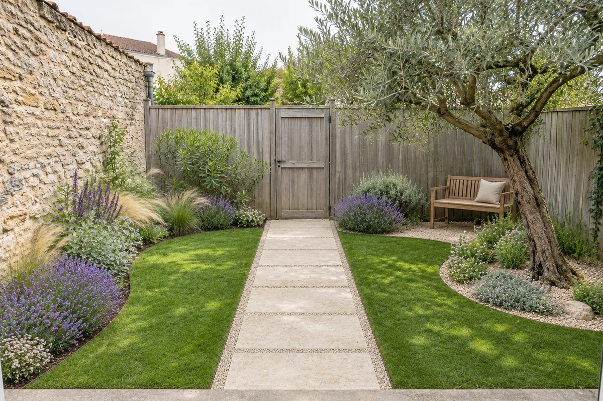

- Accueil
- Réalisations
Nos réalisations
Avant / Après
Le résultat, en un geste
Faites glisser le curseur pour comparer le jardin avant et après l’intervention du Ch’ti Élagueur.




Galerie
Haies, pelouses, élagage…
Voici les photos de nos réalisations. Touchez une photo pour l’agrandir.


Bon à savoir
Haies en bordure de rue : la règle
- Les haies doivent être taillées à l’aplomb du domaine public (rue, trottoir, grillage…).
- Leur hauteur doit être limitée à 2 mètres, voire moins là où la visibilité est primordiale (virage, carrefour…).
- En bordure des voies publiques, l’élagage des arbres et des haies incombe au propriétaire (ou au locataire), qui doit veiller à ce que rien ne dépasse de sa clôture sur la rue.
Merci de respecter cette règle, pour le bien-être et la sécurité de tous ! Besoin d’une remise à niveau de votre haie ? Taille de haie